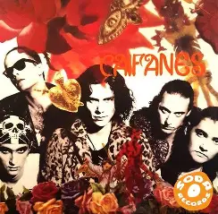
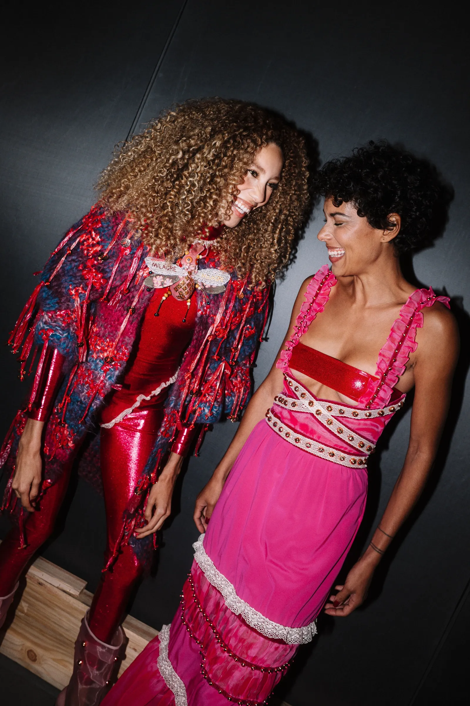

En los años 60, en Japón, el remoto pueblo de Ebisugaoka donde vive Shimizu Hinako se ve cubierto por una niebla repentina que transforma su hogar en una auténtica pesadilla.
Mientras el pueblo se torna silencioso y la niebla se vuelve más espesa, Hinako debe explorar los laberínticos caminos de Ebisugaoka, resolver acertijos complejos y enfrentarse a monstruos grotescos para sobrevivir.
Adéntrate en el mundo de Hinako, obra del reconocido autor Ryukishi07. Experimenta música cautivadora, que incluye piezas del compositor veterano de Silent Hill, Akira Yamaoka, y gráficos alucinantes en una atrapante historia de dudas, remordimientos y decisiones ineludibles. ¿Podrá Hinako entregarse a la belleza oculta dentro del terror? ¿O sucumbirá a la locura que le espera?
Descubre un nuevo capítulo de la serie de Silent Hill, que combina el terror psicológico con una aterradora ambientación japonesa.
🎵
Canción
Artista
0:000:00
Los ‘Mexican Raves’ y cómo la música latina sigue creciendo gracias al EDM
Las nuevas generaciones han revolucionado la música con la reinvención de las fiestas que se desarrollan en Estados Unidos.
Para nadie es sorpresa que en la actualidad “lo latino está de moda”, justo como dijo Bad Bunny durante su presentación en el show del medio tiempo del Super Bowl.
Pero este auge no es una casualidad, ni una cuestión de un solo artista; son varios factores que se han ido sumando para lograr posicionar estos sonidos en el gusto del público, sobre todo aquel que no habla español.
La música latina dejó de ser solo de un nicho para convertirse en el mainstream de una industria tan popular como la de Estados Unidos, una transformación que se nota en los shows, según el propio Juan Miguel Cordero, promotor de conciertos y gestor de eventos musicales en dicho país.
El sonido latino no es una casualidad y una gran influencia es el fenómeno (se podría denominar incluso cultural) que comienza a tomar auge y es conocido como “Mexican Raves”.
Como si se tratara de los propios inicios del Electric Daisy Carnival, en estos eventos se mezcla música electrónica del tipo EDM con sonidos regionales, como lo pueden ser la banda y el norteño.
Este tipo de fiestas se ha popularizado en estados como Los Ángeles y diversas zonas de California, Chicago, Houston, Dallas y el resto de Texas.
Fuente: MILENIO

Caifanes brinda noche de nostalgia musical en el Palacio de los Deportes
Ciudad de México. Sobre un escenario giratorio en 360 grados, con pantallas y espectaculares proyecciones, Caifanes logró la pleitesía de 22 mil aliados que agotaron taquilla en el Palacio de los Deportes, en la primera de cinco fechas que protagonizarán este mes en el recinto de Iztacalco.
A las 21 horas, comenzaron a organizarse las olas humanas, que se observaron ondulantes de un extremo a otro del domo de cobre; en las gradas los cuerpos se levantaron de sus asientos provocando la algarabía y una fiesta temprana.
Pero fue a las 21:16 cuando la legendaria banda, encabezada por por el cantante y compositor Saúl Hernández, provocó que se iluminara el recinto con las luces blancas de miles de celulares. La reverencia del frontman a su público fue inmediata y se escucharon los acordes de Aquí no es así.
No hubo necesidad de más, las miles de voces se sumaron a la de Hernández en esa letra. El coro fue unánime, brincos y baile se observaron en diversos puntos de la pista. Siguieron enlazadas las rolas Para que no digas que no pienso en ti, momento en que el mítico vocalista colocó la bandera mexicana en el porta micrófono.
Tras interpretar Detrás de ti, Hernández agradeció a sus aliados “el aplauso es para ti, raza” y la banda continuó con Detrás de los cerros y Miedo. “Antes que muera déjame amarte en vida hasta el cielo se caiga por nosotros”, acompañó el multitudinario coro al chamán que hizo del ritual una catarsis.
En Miércoles de ceniza, las pantallas y la plataforma giratoria permitieron ver la maestría de André en la batería, al igual que Rentería con su bajo, Baills en la guitarra y Herrera con sus teclados y el sax. Se observó la dedicación, disciplina y concentración de cada uno de los músicos, que estuvieron al descubierto, hasta casi sentir su respiración.
MURIO SANTI YONAMINE DE LOS PARRALEÑOS
Este jueves murió a los 47 años Santi Yonamine, histórico tecladista de la banda de cumbia samurai Los Parraleños. En las redes oficiales del grupo despidieron al músico con un sentido posteo. “Buen viaje, amigo ¡¡Te vamos a extrañar!!“, escribieron.
Sobre una foto en la que se lo puede ver tocando la guitarra, sumaron: “Se nos fue de gira un eterno ¡Te vamos a extrañar! Que sea rock“.
Sergio Asato, músico y empresario gastronómico amigo de Yonamine, le dedicó unas conmovedoras palabras. “Hoy el rock nikkei se queda un poco más en silencio. Con mucha tristeza nos toca despedir a Santi Yonamine, un loco rebelde, creativo y apasionado que supo ser el alma de Los Parraleños y el Dúo Kamikaze“.
“Se fue al reencuentro con su hermano Sergio Yona y Niko Takara dejándonos el recuerdo de su fuerza y esa esencia rockera que tanto lo caracterizaba. Sabemos que ya nada será igual sin él, pero su legado seguirá vivo en cada acorde. Mucha fuerza a toda la familia de Los Parraleños. Que sigan adelante con la garra de siempre, honrando su memoria en cada escenario. Por Nico y Santi, ¡salud y puro rock!”“, completó.
The Lady Dior Cherry Blossom
Para la colección Dior Otoño 2025, la Lady Dior se reinventa en una nueva versión llamada Cherry Blossom, un sutil homenaje a los fascinantes lazos que unen la Casa y Japón. Vestido con un cuero burdeos fascinante, revela un motivo de cerezo meticulosamente bordado salpicado de cuentas facetadas. Cada diseño está dispuesto con precisión infinita para fluir alrededor de la bolsa en un solo movimiento.
Este modelo excepcional cobra vida en los ateliers gracias a los gestos apasionados de los artesanos, que cortan las piezas, las ensamblan y las cosen una a una. Los preciosos toques finales ilustran el arte del detalle tan apreciado por el modisto fundador, como los charms DIOR cuidadosamente elaborados a mano. Descubra en imágenes esta oda a la poesía y la excelencia.
Fuente: DIOR

El regreso de Rio Fashion Week es un triunfo necesario para la moda latina
Luego de una ausencia de poco más de diez años, así es como la semana de la moda de Brasil fortalece la perspectiva de la moda latina desde la ciudad
La vuelta de Rio Fashion Week a la capital carioca plantea una pregunta clave: ¿qué hace relevante hoy a la moda latinoamericana dentro del sistema global? A lo largo de la semana, la respuesta se volvió evidente: su mayor fortaleza sigue radicando en la identidad. Más que un recurso estético, esta fuerza se manifestó de principio a fin en los desfiles que conformaron el calendario. Se tradujo en el uso de los materiales locales —principalmente fibras naturales—, en siluetas que se ajustan a la diversidad de cuerpos —y no al revés—, y en la conceptualización de las colecciones que celebraron la narrativa cultural de una ciudad que transita entre el mar y la montaña, una que hay que vivirla para entenderla.
Aunque los orígenes de las pasarelas en la moda carioca se remontan a los años noventa y se formalizaron como “Fashion Rio” a principios de los 2000, el evento dejó de celebrarse a mediados de la década de 2010, en un proceso que terminó por concentrar la industria en São Paulo Fashion Week. Su regreso en 2026 responde también a un esfuerzo por reposicionar a la ciudad como un escenario internacional. Con apoyo de la alcaldía de la ciudad, esta nueva etapa fue organizada por IMM, la misma empresa detrás de eventos de gran escala como el Rio Open, Cirque du Soleil y la propia São Paulo Fashion Week. Ahora, Río de Janeiro se queda con la semana de la moda del primer semestre del año, mientras que la de São Paulo se llevará en el segundo semestre del año.
El recorrido de los desfiles comenzó con Osklen en el Palácio da Cidade, un edificio de estilo gregoriano cuyos largos pasillos sirvieron como escenario para una colección inspirada en la pluralidad del paseo marítimo de Ipanema. Piezas en tejidos naturales con cristales y prendas metalizadas dieron forma a la propuesta de su fundador, Oskar Metsavaht. La firma, pionera en procesos sustentables, reafirmó su enfoque mediante el uso de materiales como la piel de pez piracucú en prendas y accesorios. Las conversaciones fluían entre los invitados locales e internacionales en una noche que marcó el preámbulo del tono que marcaría el resto del calendario.
Dior Crucero 2027: Jonathan Anderson escenifica una fantasía de cine negro de Hollywood en Los Ángeles
Jonathan Anderson ha presentado su primera colección Crucero para Dior en Los Ángeles, inspirándose en el cine negro de Hollywood y la naturaleza californiana.
Mientras gran parte de Hollywood se ha trasladado a la Riviera Francesa para disfrutar del festival de cine de Cannes, Jonathan Anderson llevó un trozo de Francia a Los Ángeles el miércoles por la noche, donde ha presentado su primera colección Crucero para Dior.
Presentada en las salas de las recién inauguradas Galerías David Geffen del LACMA, la colección se inspira, como no podía ser de otra manera, en la ciudad elegida por Anderson. Los lazos entre Dior y Hollywood son más profundos que los de la mayoría de las maisons, un hecho del que Anderson es muy consciente. Y aunque él ha estado cultivando su propia relación con las estrellas de la meca del cine —muchas de las cuales acudieron a apoyarle a pesar del festival en la Riviera Francesa—, el propio fundador de la firma ya definió en su día cómo era trabajar con y para Hollywood, desde Grace Kelly hasta Elizabeth Taylor y Rita Hayworth, en su época dorada.
Por supuesto, en la pasarela se pudieron encontrar algunas referencias al legado de la Casa Dior en Hollywood. Los invitados estaban sentados entre automóviles clásicos mientras una niebla artificial invadía el escenario, dotando a toda la escena del ambiente del cine negro del viejo Hollywood. Sin embargo, el resultado no fue tan oscuro como el escenario podría haber sugerido, ya que la naturaleza y las flores, sellos distintivos tanto de Anderson como de Christian Dior, se inspiraron esta vez en el paisaje natural de California. La primera serie de looks, un trío casi idéntico de vestidos de talle bajo con distintos grados de transparencia y adornos de rosetas, se deslizó fantasmagóricamente por la pasarela.
“La rica historia de Dior en Hollywood fue el punto de partida de esta colección, que cobró vida como un campo de amapolas californianas a finales de la primavera”, describió el diseñador la colección en la página web de Dior, explicando así cómo la conexión con el mundo natural siguió siendo fundamental en la visión de Anderson, ampliando las ideas exploradas por primera vez en la presentación de la casa en las Tullerías el pasado marzo para Otoño/Invierno 2026/27. Apliques florales de gran tamaño volvieron a florecer en abrigos y vestidos, mientras que diminutas flores blancas, similares a nardos, formaban ribetes de flecos prendidos en los hombros o cayendo en cascada desde los bajos.
Aplazan hasta 2028 nuevas reglas de etiquetado en bebidas para no afectar precios
El documento explica que la ampliación a las fases para la revisión de los sellos negros es para evitar el aumento de costos a productos de la canasta básica de los programas sociales.
Aplazan entrada en vigor del nuevo etiquetado
El gobierno federal postergó hasta el 1 de enero de 2028 la entrada en vigor de la tercera fase del etiquetado frontal para alimentos y bebidas no alcohólicas. Esta etapa incorporará un cambio clave: también se deberán medir y etiquetar los niveles de azúcares, grasas y sodio que estén presentes de forma natural en los productos, no solo los añadidos.
Objetivo: mejorar salud pública
La intención es ofrecer información más completa al consumidor para reducir los índices de sobrepeso y obesidad en México. La regulación forma parte de la Norma Oficial Mexicana NOM-051, que establece criterios de advertencia en el etiquetado cuando se exceden ciertos niveles de calorías y nutrientes críticos.
Norma más estricta.A diferencia de las fases anteriores, en esta tercera etapa los productos también recibirán sellos si sus ingredientes naturales superan los límites permitidos. Por ejemplo, un chocolate que ya tenía sellos por azúcares y calorías podría recibir un tercero por grasas naturales del cacao.
MILENIO
Sabores tropicales impulsan la innovación en el mercado del té helado europeo
Lipton apuesta por sabores tropicales que refleja la evolución del mercado global del té helado
España.- El té helado dejó de ser una bebida estacional para convertirse en uno de los segmentos con mayor dinamismo dentro del mercado global de bebidas listas para consumir (RTD, por sus siglas en inglés).
La combinación entre conveniencia, menor contenido de azúcar frente a refrescos tradicionales y la incorporación de ingredientes funcionales está modificando los patrones de consumo, especialmente entre generaciones jóvenes y consumidores enfocados en bienestar.
Diversos análisis estiman que el mercado global de té listo para beber superará los 60 mil millones de dólares hacia 2033, con tasas de crecimiento cercanas al 5.7% anual. La demanda se sostiene por tres factores: salud, formatos on-the-go e innovación sensorial
La reducción del consumo de bebidas carbonatadas está abriendo espacio para categorías percibidas como más saludables.
El té helado RTD se posiciona como una alternativa con antioxidantes naturales, menor contenido calórico y posibilidad de incorporar beneficios adicionales como adaptógenos, extractos botánicos o ingredientes para hidratación y energía.
Según estimaciones del mercado, el segmento global de té RTD alcanzó un valor cercano a 39.5 mil millones de dólares en 2024 y podría llegar a 69.2 mil millones hacia 2034.
Además del impulso en Asia-Pacífico —región líder por tradición de consumo—, Europa muestra señales de aceleración. En España, el mercado de té RTD creció alrededor del 18% en 2025 y mantuvo incrementos cercanos al 20% al inicio de 2026, impulsado por una mayor frecuencia de compra y penetración en hogares.
Mexicanos priorizan gasto, sube 20.5% compra de alimentos y baja 13.1% pago por esparcimiento: Inegi
Los hogares mexicanos están gastando más, pero de forma más dirigida: destinan más recursos a alimentos y educación, y menos a entretenimiento pues de acuerdo con la Encuesta Nacional de Ingresos y Gastos de los Hogares (ENIGH) 2024.
Los hogares mexicanos están gastando más, pero de forma más dirigida: destinan más recursos a alimentos y educación, y menos a entretenimiento pues de acuerdo con la Encuesta Nacional de Ingresos y Gastos de los Hogares (ENIGH) 2024, el gasto en alimentos, bebidas y tabaco creció 20.5 por ciento en comparación con 2016, mientras que el gasto en esparcimiento, cultura y deportes cayó 13.1 por ciento.
El gasto corriente trimestral promedio por hogar fue de 72 mil 705 pesos, lo que representa un aumento real de 9.2 por ciento. La mayor proporción de este gasto se concentra en alimentos (37.7 por ciento), seguida por transporte y comunicaciones (19.5 por ciento), mientras que la salud permanece rezagada con apenas 3.4 por ciento del total.
Los rubros que menos absorben gasto corriente monetario en 2024 fueron leche y sus derivados (mil 236 pesos), bebidas alcohólicas y no alcohólicas (mil 192 pesos), y vestido ( mil 105 pesos).
Además en la variación del 2022 al 2024, los alimentos, bebidas y tabaco aumentaron 8.1 por ciento, mientras que la educación y esparcimiento sólo aumentó 6 por ciento.
Prohibición de los ‘deepfakes’ sexuales y multas millonarias: el Gobierno aprueba su ley de IA
El Consejo de Ministros da luz verde a la normativa que traspone el reglamento europeo y que establece qué aplicaciones de inteligencia artificial están prohibidas
Fuente: Tech Ahora
¿Por qué hay cada vez más sobresalientes en la universidad? La culpa es de ChatGPT
Una nueva investigación revela que al menos 1 de cada 10 trabajos está hecho con la ayuda de la IA. Las carreras donde los alumnos hacen más trampas son Económicas y Periodismo
Video: Demo y Características
Presentación técnica y demo de la plataforma por sus desarrolladores.
Un monje experto, un festival con Karol G y las inversiones vaticanas: así ha llegado el Papa a decir que “la IA debe ser desarmada”
Las críticas a las grandes tecnológicas de la primera encíclica de León XIV contrastan con el hecho de que la Iglesia no ve problema en comprar valores en esa industria
Fuente: AgroTech
Ann Dooms, matemática: “En el mundo real, la intuición humana sigue siendo insustituible”
Es una de las expertas mundiales en lo que ella y su grupo llaman “matemática digital”: un término propio para distinguir el procesamiento clásico de señales o del análisis de datos más convencional
Partidos del lunes 25 de mayo: Playoffs de la NBA y Beisbol MLB
El futbol en el mundo tiene una breve pausa, previo a la Copa del Mundo y el mundo deportivo se concentra en la NBA y el beisbol de las Grandes Ligas.
Gucci entra a la F1: anuncian acuerdo millonario con Alpine que cambiará la parrilla
La icónica casa de moda entrará en lugar de BWT como patrocinador principal, en un acuerdo histórico estimado en más de 150 millones de dólares
Estadio Cuauhtémoc de Puebla se cubre de nieve en pleno verano
Una imagen pocas veces vista en el futbol mexicano dejó una tormenta con granizo en la ciudad de Puebla.
Cristiano Ronaldo le juega broma a Kylian Mbappé para vengarse
CR7 no se quedó de brazos cruzados tras la travesura de Mbappé en un comercial de Lego.